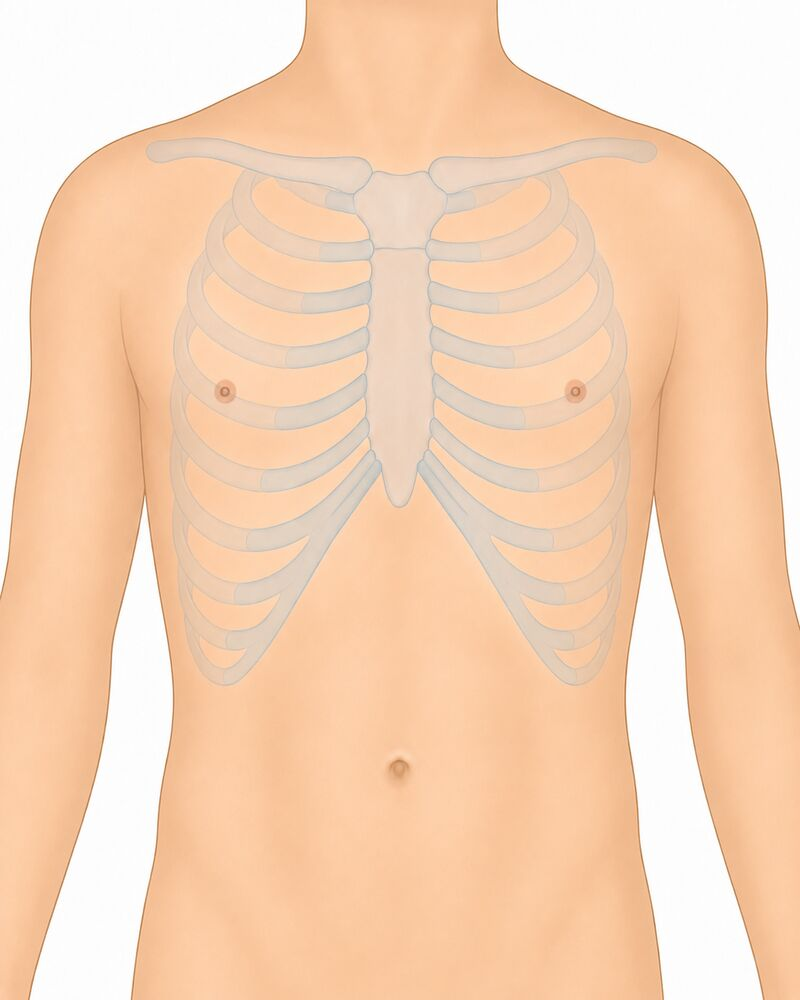
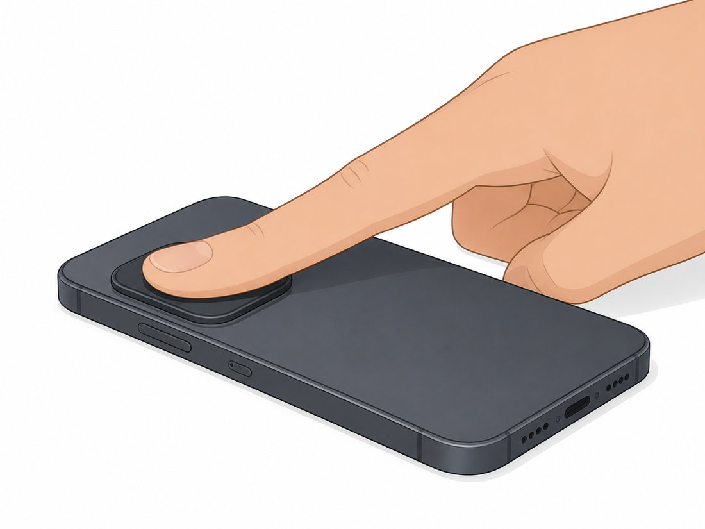
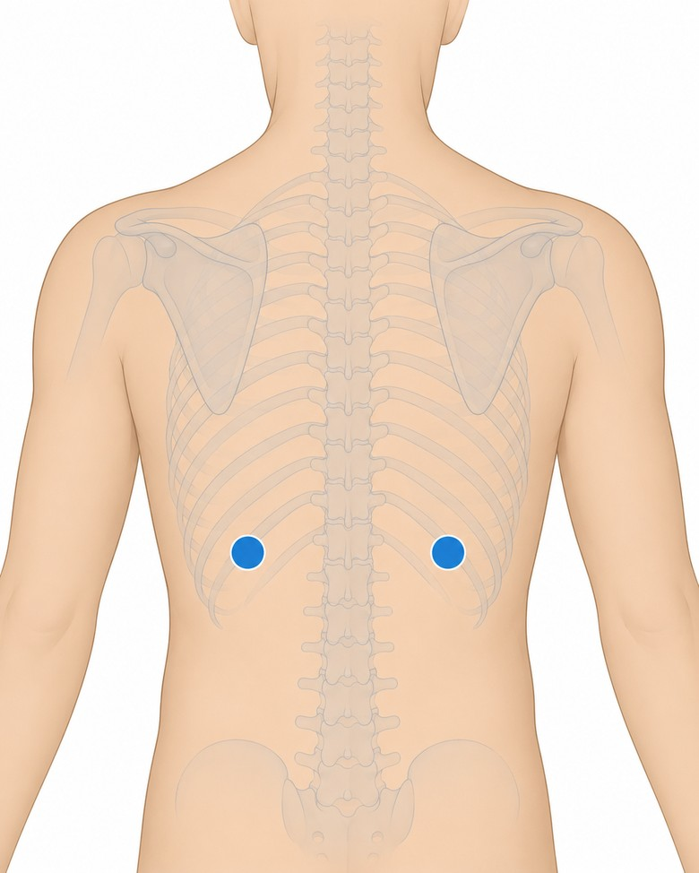
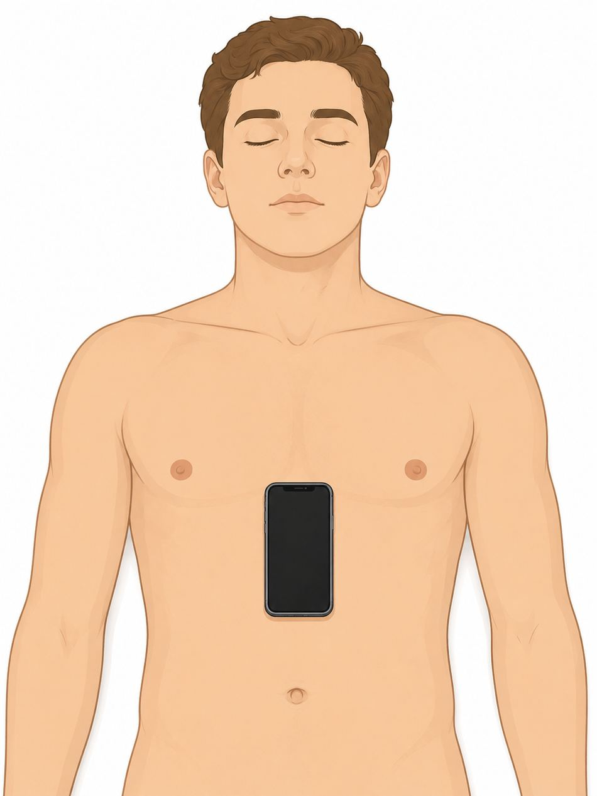
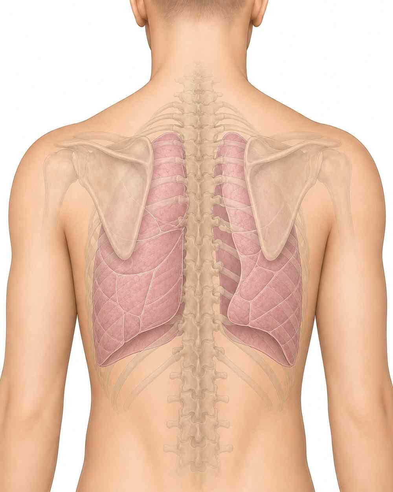

• Place the film on a lightbox / bright screen
• Fill the frame, keep it straight, avoid glare/reflections
• Screening aid only — not a diagnosis
How are your heart & lungs today?
Screen heart sounds, lung sounds, rhythm and pulse with the phone already in your pocket — no extra hardware, and your recording is analysed over a secure connection.
Dr. Jaideep Rao M. · Government Medical College, Maheshwaram
Phone percussion
Map percussion notes across the chest against a within-patient reference.
Technique · step-by-step
How to tap the chest with the phone
The phone listens to the tapping sound for you — you don't hold it in the air.
Fingertip PPG + CVD risk
Estimates pulse, heart rhythm and cardiovascular-risk indicators from fingertip PPG.
Technique · step-by-step
How to record fingertip PPG
Cover the phone's rear camera lens AND flash together with the pad of the index fingertip — both fully covered, no gap.
Side-to-side breath comparison
Records each side sequentially and compares the breath sounds between the two sides.
Technique · step-by-step
How to record breath sounds
Seated in thin clothing, leaning slightly forward. Press the phone's bottom (mic) edge flat and firm against the lung base on the back.
Cardiovascular exam
On-demand heart-rhythm (phone accelerometer on the chest) + neck / JVP pulsation (camera).
Technique · step-by-step
How to read rhythm (seismocardiography)
Patient lying down or sitting still. Place the phone flat, screen up, on the centre of the chest (lower breastbone). Hands off, breathe normally, stay quiet for the countdown — the phone feels each heartbeat as a tiny vibration.
Lung-sound screen
Records lung sounds with the phone mic and a cloud AI model screens for normal vs abnormal (crackles/wheezes). Tap and record 6 points on the back — the app averages them into one result.
Technique · step-by-step
How to record lung sounds
Seated in thin clothing, leaning slightly forward, quiet room. Tap a point on the body image below, press the phone's bottom (mic) edge firmly on the skin at that spot, ask the patient to breathe deeply through the mouth, then press record. Do all 6 points.
Cough counter
Records 60 seconds with the phone mic. A cloud AI model (YAMNet) detects coughs and returns a total count and rate per minute. No audio is stored — only the number.
Technique · step-by-step
How to count coughs
Quiet room. Patient sits an arm's length from the phone. Press START and let the patient sit naturally for 60 seconds — do not ask them to force-cough. The app stops automatically and runs the cloud AI.Lung sound type
Records 15 seconds at one chest point. A cloud AI analyses the sound for crackles (pneumonia/fibrosis/edema) and wheeze (asthma/COPD/obstruction). No audio is stored.
Respiratory rate (WHO fast-breathing)
Hold the phone near the patient's nose/mouth (not the chest) and ask them to breathe audibly. Press START — after a quiet moment it records 30 s and a cloud AI computes the rate. (In a noisy room, use the tap method below.)
Blow test (Forced Expiratory Time)
Patient takes the deepest breath possible, then blows into the phone mic as hard and as long as possible until no more air comes out. The app times the audible breath. ≥6 seconds suggests airflow obstruction (COPD/asthma).
Single-breath count test
Patient takes the deepest breath possible, then counts out loud "one, two, three…" at about two per second in a normal voice, until they must breathe again. The app measures how long they sustain it and estimates the count. Under 25 suggests reduced respiratory reserve.
Maximum phonation time ("Ahh" test)
Patient takes the deepest breath possible, then says "ahhhh" in a steady voice for as long as possible on one breath. The app times it. Under ~10 seconds suggests reduced respiratory/laryngeal function.
About CardioPulmo
Test performance & methods
| Model | Dataset | AUC | Sens | Spec |
|---|---|---|---|---|
| Heart sound (CardioScope) | PhysioNet/CinC-2016 | 0.996 | 98.3% | 95.6% |
| Murmur (CirCor) | CirCor DigiScope | 0.875 | 72.8% | 93.3% |
| Lung sound (normal/abnormal) | ICBHI-2017 | 0.87 | 63.2% | 100% |
| Crackle | ICBHI-2017 | 0.671 | 64.1% | 61.3% |
| Wheeze | ICBHI-2017 | 0.734 | 63.7% | 70.7% |
| Metric | Chest X-ray |
|---|---|
| Training data | TB CXR (Shenzhen + Montgomery + Qatar DB) + VinDr-CXR |
| Method | MobileNetV2 transfer learning |
| Internal test AUC | TB ~0.99 · Cardiomegaly 0.96 · Effusion 0.96 · Pneumonia 0.84 · Consolidation 0.93 · Nodule/mass 0.94 · Pneumothorax 0.83 · Fibrosis 0.92 · Pleural thickening 0.95 |
| Test | Measures | Validation |
|---|---|---|
| Cough counter | Coughs + rate/min (YAMNet) | Detects cough events; no audio stored |
| Breaths/min (RR) | Resp. rate → WHO fast-breathing | ~0.2–0.8 breaths/min MAE vs RIP belts |
| Blow test (FET) | Forced expiratory time | ≥5 s: Sens 94% / Spec 81% (obstruction) |
| Breath count (SBCT) | Single-breath count | r≈0.55 vs FVC; <30 flags support (COVID) |
| Ahh time (MPT) | Max phonation time | Correlates FVC; inter-rater 0.94–0.95 |
| Metric | Cardiac timing |
|---|---|
| Reference dataset | EPHNOGRAM (PhysioNet v1.0.0) |
| Recordings / subjects | 69 rec · 24 healthy adults |
| Healthy band (@60 bpm) | 270–337 ms |
| Metric | Rhythm screen |
|---|---|
| Method | RMSSD/mean + Shannon entropy |
| Sensitivity / Specificity | 96.2% / 97.5% |
Terms & Conditions
Privacy Policy
• Details you enter: name, age, sex, height, weight, smoking status, any known heart/lung condition, current symptoms, optional phone number, and your role.
• Recordings: short heart and lung sound clips (.wav) you choose to record.
• Results: the screening outputs computed from your recordings (e.g., rate, rhythm, probabilities, quality).
We do not collect precise location, contacts, or other data from your phone.